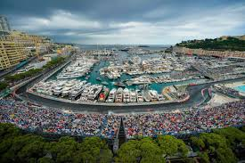

Monaco est une destination prestigieuse sur la Côte
d’Azur, connue pour son luxe, son climat ensoleillé et
ses paysages entre mer et montagne. Entre ses hôtels
luxieux, ses restaurants délicieux et ses événements
prestigieux, Monaco offre une expérience unique
d'élégance. Cliquez sur les images ci-dessous pour savoir
d'avantage sur les sites à visiter et les mets populaires.

Les sites à visiter | ||
|---|---|---|
|
Le Palais Princier |
Le Musée Océanographique |
Le Casino de Monte-Carlo |
|
Port Hercule |
 Monaco Grand Prix |
Plage Larvatto |
|
Jardin Japonais |
Opera de Monte-Carlo |
Casino Square |